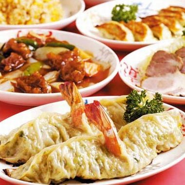
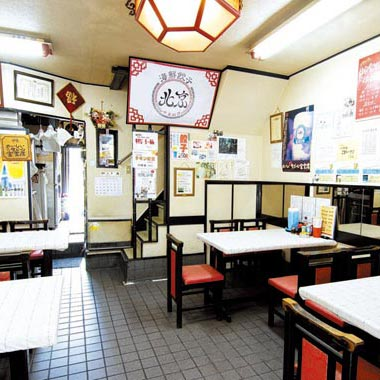

店舗紹介
海鮮餃子の北京は、大阪府枚方市宮之阪にある中華料理店です。
新鮮な豚肉と減農薬野菜を使用したジューシーな餡に、海鮮の風味と食感を残す大きな具材を合わせ、
ひとつひとつ手作りした海鮮餃子が名物です。
食材は国産中心。やきぶたは七輪で焼くなど、毎日の調理にも手間を惜しみません。


店舗情報
| 店名 | 海鮮餃子 北京 |
|---|---|
| 住所 | 〒573-0022 大阪府枚方市宮之阪1-19-2 |
| 電話 | 072-849-0433 |
| FAX | 072-849-0606 |
| 営業時間 | 11:30-22:00（ラストオーダー 21:45） |
| 定休日 | 火曜日 |
| アクセス | 京阪電車「宮之阪駅」徒歩約2分 / 「枚方市駅」徒歩約10分 |
| 駐車場 | 4台。満車の場合は隣のコインパーキングをご利用ください。 |